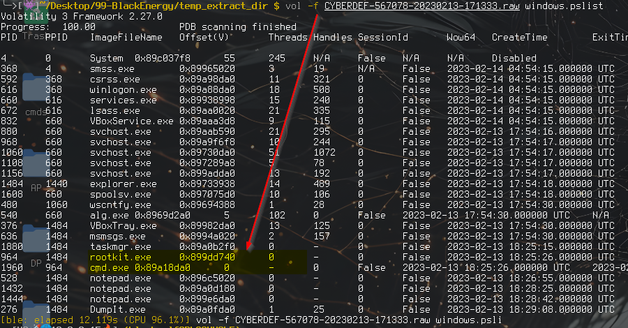
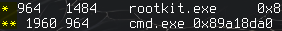
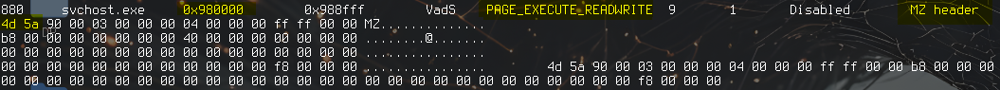
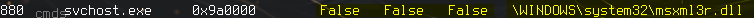

Memory forensics investigation of a multinational corporation breach via BlackEnergy v2 rootkit: process injection, hidden DLL identification and kernel-mode driver analysis.
A multinational corporation suffered a targeted attack resulting in sensitive data theft. The attack leveraged a previously unseen variant of BlackEnergy v2 which is a sophisticated rootkit with documented use against critical infrastructure. The task is to analyse a raw memory dump of the compromised Windows XP machine (CYBERDEF-567078-20230213-171333.raw) to determine the scope of infection: which processes were abused, how the malware concealed itself, and what artifacts confirm malicious activity.
| Tactic | Technique ID | Technique | Evidence Observed |
|---|---|---|---|
| Execution | T1106 | Native API | rootkit.exe spawned cmd.exe (PID 1960) via Windows API: confirmed via pstree parent-child relationship |
| Privilege Escalation | T1055.001 | DLL Injection | msxml3r.dll injected into svchost.exe PID 880: all three ldrmodules flags (InLoad, InInit, InMem) returned False, indicating hidden/unlinked DLL |
| Defense Evasion | T1014 | Rootkit | BlackEnergy v2 kernel driver str.sys found at "C:\WINDOWS\system32\drivers\str.sys": kernel-level component hides processes and files |
| Defense Evasion | T1036.004 | Masquerading: Match Legitimate Name | msxml3r.dll named to mimic legitimate msxml3.dll: one character difference designed to evade cursory inspection |
| Discovery | T1057 | Process Discovery | Malware uses mutant objects (Zones*, RasPbFile, Wininet*) within svchost.exe to enumerate and coordinate across processes |
| Collection | T1005 | Data from Local System | Sensitive data theft confirmed per scenario brief: rootkit provided persistent access enabling exfiltration |
imageinfo (Vol2) or windows.info (Vol3) suggested two candidates: WinXPSP2x86 and WinXPSP3x86. The lab accepts WinXPSP2x86.
pslist gave a full process inventory. Counting only active processes (threads > 0, no Exit time) returned 19 running processes. Two immediately stood out as terminated but suspicious: rootkit.exe and cmd.exe.

rootkit.exe is self-evidently abnormal. Using pstree confirmed the parent-child relationship: rootkit.exe spawned cmd.exe (PID 1960), consistent with an attacker dropping a rootkit and using it to launch a command shell. psxview further revealed processes attempting to hide from the standard process list.

malfind scans for memory regions that are executable, writable, and contain an MZ header (magic bytes): the hallmarks of injected code, it's not just random data. svchost.exe (PID 880) stood out clearly: VAD entry showed PAGE_EXECUTE_READWRITE protection and bytes beginning with 4D 5A the MZ magic bytes of a PE executable. Base address of the injected region: 0x980000.

Dumping the injected region and submitting the hash to VirusTotal confirmed it as a BlackEnergy variant, multiple vendors flagged it as malicious.ldrmodules lists all modules loaded into a process and flags any unlinked from the three Windows loader: a DLL with InLoad=False, InInit=False, InMem=False is actively hiding itself.

Runningwindows.handles --pid 880 revealed an unusual file reference: C:\WINDOWS\system32\drivers\str.sys the kernel-mode component of BlackEnergy used to hide processes and files from the OS.
| grep File to it.